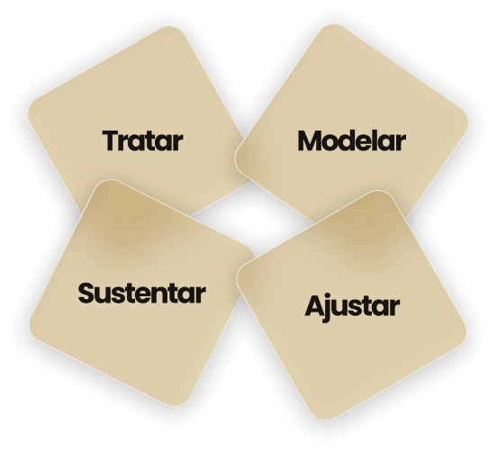
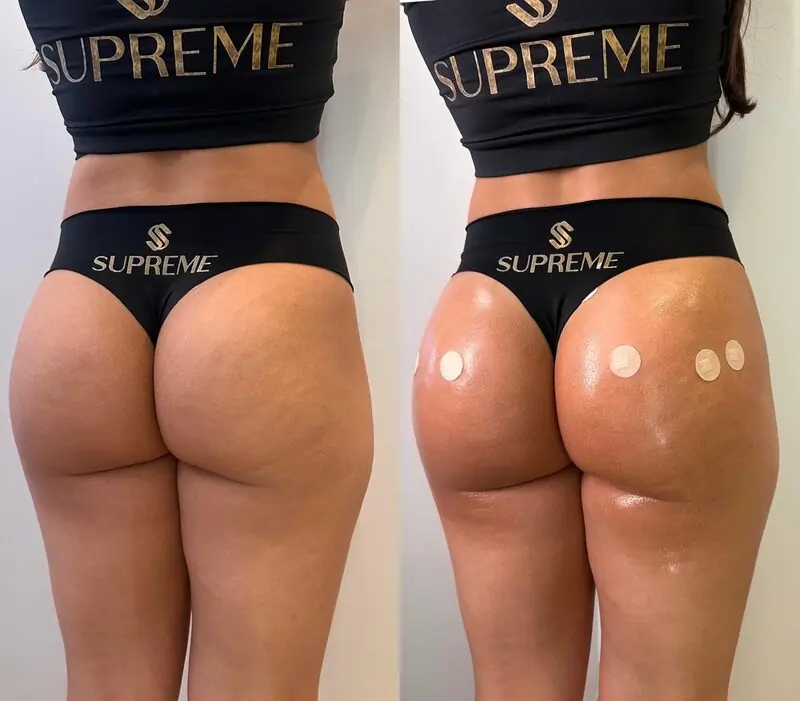
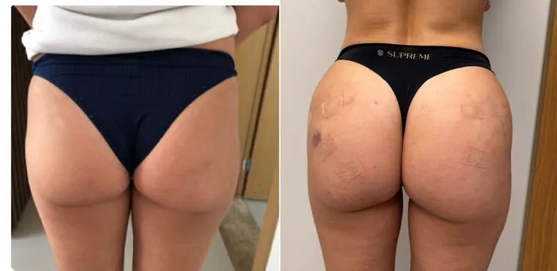
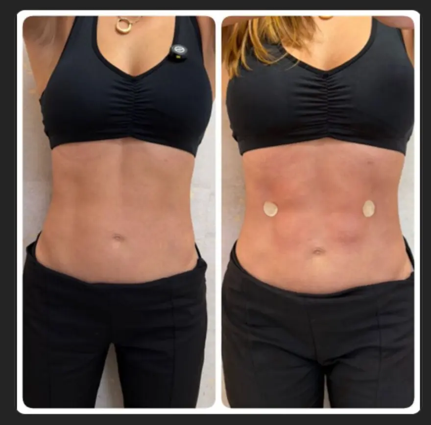
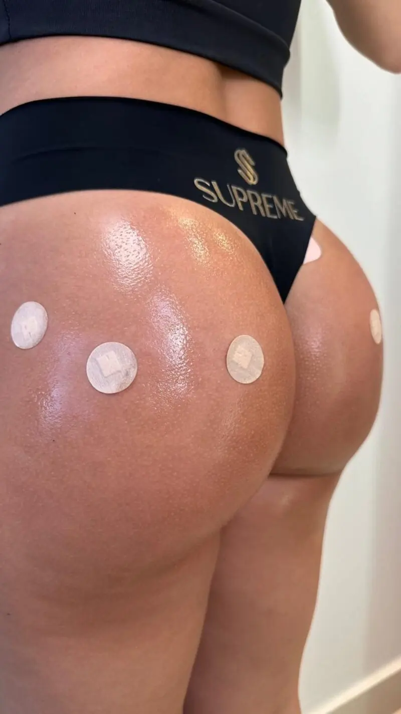
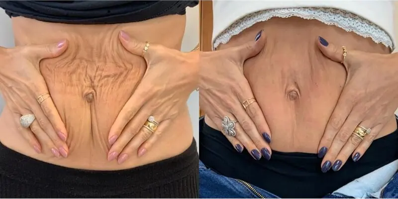
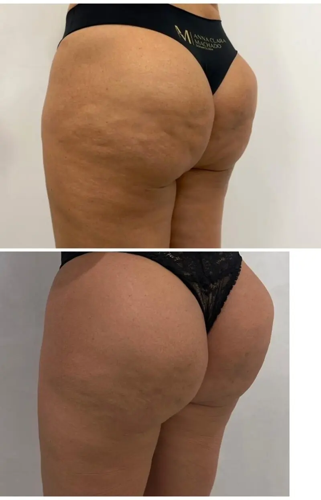

O protocolo corporal que transforma a clínica em uma operação premium.
Dois dias presenciais em Goiânia. No dia 19, os cinco protocolos Full Body aplicados sob supervisão. No dia 20, Gestão do Full Face ao Full Body: como criar um ecossistema corporal que transforma os resultados da sua clínica.
Supreme Full Body Experience·19 e 20 de outubro·Goiânia·Harmonização corporal premium·
Imersão para médicos·Turmas reduzidas·Supreme Full Body Experience·5 protocolos·
O convite
Assista e conheça a Full Body Experience
A Dra. Maria Lígia e a Dra. Ana Machado explicam, em menos de um minuto, o que muda na clínica quando o corporal entra no portfólio, e por que os dois dias foram desenhados dessa forma.
Não é opinião de mercado, é o que aparece na agenda: a mesma técnica que abria diferença há cinco anos hoje é oferecida por dezenas de profissionais na mesma cidade.
A concorrência multiplicou
Preenchimento, bioestimulador e protocolo facial deixaram de ser diferencial. O paciente é impactado todos os dias por dezenas de profissionais oferecendo praticamente a mesma coisa, e o número de categorias autorizadas a atuar na estética cresceu rápido.
O paciente corporal compra outra coisa
Ele não busca melhorar uma área. Busca transformação: voltar a se sentir seguro dentro da própria roupa. Isso muda o valor percebido do tratamento, e muda o que ele aceita investir quando entende o que está comprando.
O ticket e a recorrência são outros
Protocolos corporais premium ocupam faixas de investimento que o facial não alcança, com retorno mais frequente e um portfólio que não se esgota em uma sessão. É o espaço menos disputado da estética hoje.
S
Como funciona
Antes do preço,entenda os dois dias.
São dois dias com públicos diferentes. O dia 19 é exclusivo para médicos. O dia 20 abre para a equipe da clínica. Entender essa separação resolve praticamente toda a dúvida sobre qual modalidade escolher.
Dia 1 · exclusivo para médicos
19de outubro, segunda
A partir das 9h
Imersão teórica e prática
Prática supervisionada na Clínica Supreme, percorrendo os cinco protocolos corporais do método.
Participa deste dia
✓Hands On: executa os protocolos
✓Observador: acompanha a aplicação e o raciocínio clínico
Não participa
×Quem comprou somente o Módulo de Gestão
Dia 2 · aberto para a equipe
20de outubro, terça
Das 9h às 13h
Módulo de Gestão
Do Full Face ao Full Body: posicionamento, precificação e fidelização, com Silvane Castro, Dra. Maria Lígia Mendonça e Dr. Arthur Rocha.
Participa deste dia
✓Hands On: já está incluso no pacote
✓Observador: já está incluso no pacote
✓Médico que quer somente a gestão
✓Gestor, sócio ou equipe: não precisa ser médico
Não participa
×Ninguém fica de fora. Este é o dia aberto.
Os 6 módulos
Foto · a receber
Registro do glúteo, 4:3
Dia 19
Glúteo Supreme
Volumização, sustentação e uso de enzimas.
Foto · a receber
Registro do abdômen, 4:3
Dia 19
Abdômen Supreme
Definição e marcação sem cirurgia.
Foto · a receber
Registro do lipedema, 4:3
Dia 19
Lipedema Protocol
Abordagem combinada e suporte inflamatório.
Foto · a receber
Registro do pernas, 4:3
Dia 19
Pernas e Embelezamento Corporal
Celulite, flacidez e contorno.
Foto · a receber
Registro do full body, 4:3
Dia 19
Full Body Supreme
Protocolos globais e integrados.
Foto · a receber
Registro do módulo de gestão, 4:3
Dia 20
Do Full Face ao Full Body
Gestão, posicionamento, precificação e fidelização.
Tratar·Modelar·Sustentar·Ajustar·Método Supreme·
Supreme Full Body Experience·19 e 20 de outubro·Goiânia·

O conceito Supreme
Tratar, modelar, sustentar,ajustar.
A maioria dos profissionais aprende técnicas separadas. O problema é que o paciente premium não compra técnica, compra consistência. O método organiza a decisão clínica em quatro etapas, na ordem em que ela precisa acontecer.
Tratar: o que limita o resultado antes da estética: retenção, processo inflamatório, lipedema.
Modelar: contorno, definição e volumização com a técnica adequada a cada tipo de corpo.
Sustentar: protocolos de manutenção pensados para durabilidade e recorrência.
Ajustar: planejamento fino por objetivo estético, biotipo e histórico clínico.
Do Full Face ao Full Body:o dia que muda a conta da clínica.
A técnica faz o médico executar. É o posicionamento que faz o paciente aceitar o valor. O dia 20 é o único da imersão aberto a quem não é médico, porque quem precifica, atende e negocia dentro da clínica precisa entender a mesma lógica.
Conduz o móduloSilvane Castro
CEO founder da Seven Gestão, advisor de negócios de saúde, empresária e palestrante. Coordenadora do Núcleo de Saúde da Câmara de Comércio Brasil-China, Silvane conduz o módulo de gestão ao lado da Dra. Maria Lígia Mendonça e do Dr. Arthur Rocha.
Como integrar face, corpo e experiência para aumentar resultados
Precificação e posicionamento de protocolos premium
Fidelização e construção de autoridade clínica
O ecossistema corporal que sustenta o resultado da clínica
Dia 20 de outubro, das 9h às 13h. Aberto a médicos, gestores, sócios e equipe. Quem faz o Hands On já tem o módulo incluso.
S
Modalidades
Agora sim: escolha comovocê quer viver a imersão.
São dois caminhos. Médico faz os dois dias. Quem cuida da gestão vem só no dia 20.
Para o médico · os dois dias
No dia 19, uma executa e a outra acompanha. No dia 20, as duas modalidades participam do Módulo de Gestão, já incluso nos pacotes.
Hands On
Turma reduzida
Você executa os protocolos, com supervisão direta dos professores durante todo o dia 19.
Dia 19 executando os cinco protocolos
Dia 20, Módulo de Gestão completo
Material clínico dos protocolos
R$16.899
à vista · ou em até 6x de R$ 2.816,50
Imersão Hands On R$ 14.900 + Módulo de Gestão R$ 1.999. O mesmo módulo custa R$ 3.790 avulso. Dentro do pacote, entra por R$ 1.999.
Observador
Turma reduzida
Você acompanha de perto toda a aplicação e o raciocínio clínico por trás de cada decisão, sem executar.
Dia 19 acompanhando os cinco protocolos
Material clínico dos protocolos
Dia 20, Módulo de Gestão completo
R$12.899
à vista · ou em até 6x de R$ 2.149,84
Imersão Observador R$ 10.900 + Módulo de Gestão R$ 1.999. O mesmo módulo custa R$ 3.790 avulso. Dentro do pacote, entra por R$ 1.999.
Para a gestão · só o dia 20
Do Full Face ao Full Body
Turma reduzida
O dia 20 vendido separado, para quem não vai ao dia 19. Quem já comprou Hands On ou Observador não precisa comprar isto: já está incluso.
Gestor, sócio ou equipe da clínicaNão precisa ser médico. É o valor do acompanhante do dia 20.
R$1.499
ou 6x de R$ 249,84
Médico que quer somente a gestãoPara quem já domina a técnica e vem pela parte de negócio.
R$3.790
ou 6x de R$ 631,67
Em uma frase
“Quero executar o protocolo com supervisão.”
Hands On
“Quero acompanhar o raciocínio clínico, sem executar.”
Observador
“Vou só ao dia 20, pela parte de gestão.”
Módulo de Gestão
O retorno
Um paciente pagaa imersão.
A conta que interessa não é quanto custa a imersão. É quantos pacientes você precisa atender para ela se pagar, e a partir de qual deles o protocolo vira margem.
É por isso que o dia 20 existe. A técnica faz o médico executar; é o posicionamento que faz o paciente aceitar o valor.
Cenário ilustrativo. A faixa usada aqui foi construída a partir de valores praticados no mercado de harmonização corporal premium. Não é promessa nem garantia de resultado financeiro. O retorno depende da sua praça, do seu posicionamento, da sua estrutura e da sua operação comercial.
Protocolo Full Body, faixa de mercado
R$ 50.000
Investimento no Hands On
R$ 16.899
Pacientes para cobrir a imersão
1
Quem conduz
Quem está na salacom você.
Um time formado por quem constrói protocolo, resultado clínico e posicionamento de mercado todos os dias, não por quem só ensina.
Idealizadora
Dra. Maria Lígia Mendonça
Médica dermatologista, fundadora da Clínica Supreme. Atuação voltada para harmonização facial e corporal avançada e protocolos premium.
Corpo & contorno
Dra. Ana Machado
Médica especialista em tratamentos corporais e protocolos avançados, com abordagens combinadas para contorno, definição e sustentação.
Participação especial
Dr. Arthur Rocha
Médico nutrólogo. Traz medicação, associação terapêutica e suporte clínico complementar em casos de retenção, inflamação sistêmica e lipedema.
Módulo de gestão
Silvane Castro
CEO founder da Seven Gestão, advisor de negócios de saúde e palestrante. Coordenadora do Núcleo de Saúde da Câmara Brasil-China.
Antes de decidir
Para quem é.E para quem não é.
Uma turma reduzida só funciona se as pessoas certas estiverem nela. Prefira desistir agora a descobrir isso no dia 19.
É para você se
Já atua com harmonização facial e quer expandir para o corporal, ampliando ticket médio e portfólio.
Quer entrar no corporal premium com protocolo claro, seguro e replicável, não com técnica solta.
Atende casos de lipedema, celulite e flacidez e busca uma abordagem clínica combinada.
Entende que autoridade e recorrência vêm de uma experiência completa, não de um procedimento isolado.
Quer trazer quem cuida da gestão junto, para que a clínica inteira saia alinhada.
Não é para você se
Procura um curso rápido para aprender uma técnica e aplicar no dia seguinte sem critério clínico.
Espera garantia de faturamento. Aqui se ensina protocolo e posicionamento. O resultado depende da sua operação.
Não é médico e quer participar do dia 19. O hands-on é restrito por exigência técnica e legal.
Está procurando o menor preço do mercado. Esta imersão é cara, e a página não esconde isso.
Quer conteúdo gravado. Os dois dias são presenciais, em Goiânia, e não há versão on-line.
S
Resultados
Registros clínicosdos protocolos.
Casos conduzidos na Clínica Supreme com os protocolos ensinados na imersão.






Conteúdo técnico-científico dirigido a profissionais da área médica. Os resultados podem variar de acordo com avaliação individual, indicação médica, resposta biológica e adesão ao plano terapêutico. Imagens publicadas mediante autorização de uso de imagem dos pacientes.
Hands On·Observador·Módulo de Gestão·Supreme Full Body Experience·
Clínica Supreme·Goiânia·19 e 20 de outubro·Imersão para médicos·
Perguntas frequentes
O que costuma ficar em aberto
Qual é a diferença entre Hands On e Observador?
No dia 19, o Hands On executa os protocolos e o Observador acompanha, sem executar. Os dois têm os mesmos protocolos, os mesmos professores, o mesmo material e o Módulo de Gestão do dia 20 incluso.
Não sou médico. Posso participar?
Do dia 20, sim. O Módulo de Gestão é aberto para gestores, sócios e equipe de clínica, por R$ 1.499. O dia 19 é restrito a médicos, por exigência técnica e legal do que é aplicado ali.
Sou médico e quero só a gestão. Como funciona?
Você compra o Módulo de Gestão avulso, por R$ 3.790, e participa apenas do dia 20, das 9h às 13h. É o mesmo módulo que está incluso nos pacotes Hands On e Observador. Dentro deles, entra por R$ 1.999.
Posso levar meu gestor comigo?
Pode. Você faz a sua modalidade normalmente e inscreve o acompanhante no Módulo de Gestão por R$ 1.499. Ele participa do dia 20 com você. Não precisa ser médico.
O Módulo de Gestão está incluso na minha modalidade?
Sim. No Hands On e no Observador, o Módulo de Gestão já entra na composição do pacote por R$ 1.999, contra R$ 3.790 do valor avulso para médico.
Preciso já atuar com harmonização corporal para participar?
Não. A imersão foi estruturada para levar você da lógica do protocolo até a aplicação prática, mesmo que sua atuação hoje seja majoritariamente facial. O que se espera é formação médica e prática clínica em estética.
Vou sair aplicando os protocolos na clínica?
O dia 19 é hands-on, com prática supervisionada em Glúteo, Abdômen, Lipedema, Pernas e Full Body Supreme. Você sai com o raciocínio clínico e o protocolo estruturado. A velocidade de implantação depende da sua estrutura e do seu perfil de paciente.
A turma é grande?
Não. As turmas são reduzidas, porque a prática do dia 19 é supervisionada de perto e isso só funciona com poucos médicos por professor. O número exato de cada modalidade a equipe comercial confirma no atendimento.
Como funciona o pagamento?
Inscrição por link on-line, à vista ou parcelado em até 6x. Cada modalidade tem o seu link: ao clicar no botão da modalidade escolhida você vai direto para o checkout correspondente.
Quando a minha vaga é confirmada?
A vaga só é confirmada após o pagamento, por ordem de inscrição. Enquanto o pagamento não é concluído, a vaga segue disponível para outro inscrito.
Posso trocar de modalidade depois de pagar?
As condições de troca de modalidade e de reembolso constam no contrato de inscrição. Fale com a equipe comercial antes de concluir a compra se ainda estiver em dúvida sobre qual escolher.
Terei suporte depois da imersão?
Sim. Há acompanhamento próximo à imersão para dúvidas sobre a aplicação dos protocolos na sua prática clínica.